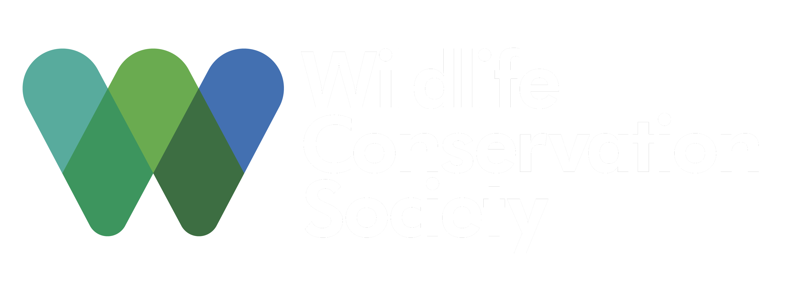
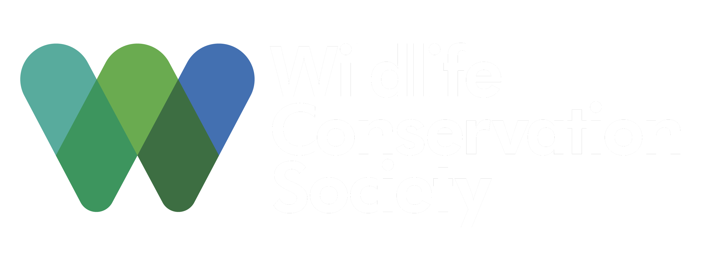

The Project
The Next Nature project and its 365 unique unique NFT's are made with a intent to support the global help for preserving and nourishing the nature. This is being done by donating 10% of each and every NFT purchase to a variety of organizations which help to either preserve or re-build certain eco systems which are necessary for the wellbeing of all of us.
Our partners

 


Idea behind the project
The Next Nature team is composed of people thriving with initiatives to help spread awareness about the current state of ecosystems around the world, what is wrong with the current way we as a society are managing these ecosystems and how we as individuals can help. Together with our love for crypto, developing, art and nature, we thought of creating a NFT to merge all this together and help as much as we can by providing part of the profits from the collection to organizations whose mission is to help the nature.
Community
You can join us and learn more about the project and the details of release and how to get involved on our discord server. Also make sure to follow our Twitter and Instagram accounts to stay up to date with the project.

Minting
Next Nature project will make 365 unique NFT's available to the public on release date at a cost of 0.2 Ethereum. Targeted release date as of now is 30th of January. With a pre-sale on 28th of January for whitelisted members with the capacity of 250 NFT's in the pre-sale.